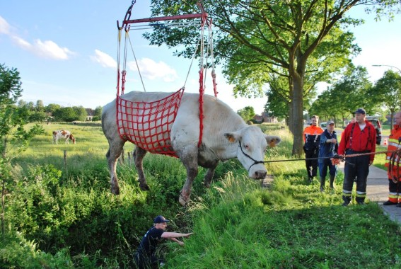

| Datum en uur | Op 25-10-2012 rond 12u06. |
| Locatie | Versterking aan brandweer Avelgem voor brand in de spaar te Kerkhove (Avelgem). Wij werden in bijstand gevraagd met onze tankwagen en rond 13u05 werd ook de 1ste autopomp uitgestuurd naar de brand. |
| Aard | Oproep via 100 Gent voor versterking met tankwagen. |
| Datum en uur | Op 19-10-2012 rond 11u00. |
| Locatie | Op het rijvak in de richting van Ronse, tussen de afritten in Bevere en de Minderbroedersstraat |
| Aard | Oproep via 100 Gent voor voertuigbrand. Een bestelwagen stond op de pechstrook in lichterlaaie, de zwarte rookpluim was van kilometers ver te zien. De bestuurder kon zijn voertuig nog op de pechstrook parkeren. Om veiligheidsredenen sloot de politie de N60 in de richting van Ronse vanaf de afrit in Bevere af en dat zorgde meteen voor een file. |
| Datum en uur | Op 30-09-2012 rond 10u45. |
| Locatie | Op de Trekweg Rechteroever te Oudenaarde |
| Aard | Oproep via een personeelslid die bezig was met de jachthaven te beluchten. 1 persoon liep zware brandwonden op aan de handen en werd overgebracht naar het AZ-Oudenaarde.Onze diensten konden zich beperken tot het ventileren van de woning die lichte brand en rookschade opliep. |
| Datum en uur | Op 04-12-2012 rond 21u35 via 100 Gent voor verkeersongeval met geknelden. |
| Locatie | Kruispunt Knokstraat met Smarre. |
| Aard | Verkeersongeval |
| Datum en uur | Op 08-12-2012 om 03u03 via 100 Gent voor verkeersongeval met geknelden. |
| Locatie | Minderbroederstraat/Kortrijkstraat te Bevere (Oudenaarde). |
| Aard | Verkeersongeval |
| Datum en uur | Op 04 -11-2012 rond 05u17 via 100 Gent voor verkeersongeval met geknelden. |
| Locatie | In de Heurnestraat te Heurne (Oudenaarde). |
| Aard | Verkeersongeval voertuig op zijn dak. |
| Datum en uur | Op 29-08-2012 rond 00u30 via 100 Gent. |
| Locatie | Op de Deinzestraat te Ooike (Wortegem-Petegem). |
| Aard | Een voertuig was in de berm terecht gekomen en over de kop gegaan. |
| Datum en uur | Op 09-06-2012 |
| Locatie | Redden van dier |
| Aard | Een koe was in een diepe sloot gesukkeld en kon op eigen kracht niet meer naar de weide omdat de sloot te diep is, onze diensten rukten uit met het haakarmvoertuig om het dier door middel van het draagharnas terug op het droge te brengen en het dier bleef de hele tijd rustig, later vernamen wij dat wij niet één maar twee dieren hadden gered omdat de koe drachtig was. |
